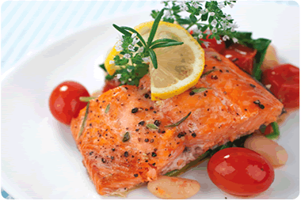

Baked Salmon dressed with Herbs and served with Tomatoes, Spinach and White Beans
Ingredients
Nonstick Vegetable Oil Spray
1/2 Cup Chopped Shallots
2 cups fresh spinach
1/4 cup white beans
2 teaspoons Tailai USA Sea Salt
1 tablespoon Tailai USA Minced Garlic
1 1/4 pound skinless center-cut salmon filet
1 tablespoon Tailai USA Lemon Pepper Seasoning
A few sprigs of fresh dill
Lemon Wedges
Instructions
Preheat over to 425 degrees farenheit. Saute shallots until lightly browned. Add fresh spinach, minced garlic, tomatoes, beans, and sea salt and continue to saute for 5 minutes. Place large sheet of foil on baking sheet. Spray foil with vegetable oil spray. Place salmon on foil; sprinkle with lemon-pepper seasoning. Spread shallot/spinch/tomato mixture over salmon. Add two tablespoons of butter. Fold up edges to enclose salmon; seal.
Bake salmon just until opaque in center, about 25 minutes. Open foil, transfer salmon and vegetables to platter. Spoon any juices over. Garnish with lemon wedges and fresh dill. Serve immediately. Makes 4 - 5 servings.